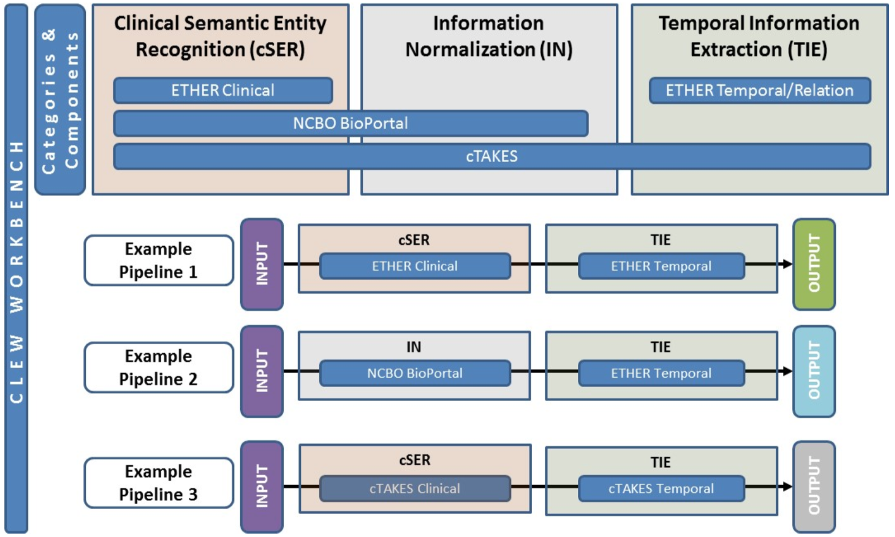

The FDA Adverse Event Reporting Systems (FAERS) and Vaccine Adverse Event Reporting System (VAERS) are spontaneous reporting systems in which pharmaceutical manufacturers, medical practitioners, patients, and their representatives submit data regarding the safety of drugs, vaccines, and biologics. The reported information supports important surveillance tasks such as the examination of safety concerns related to marketed products, the evaluation of manufacturer compliance to reporting regulations, and multiple research activities both within and outside the FDA.
The demos assemble NLP services that accepts and processes unstructured textual information, returns standardized clinical semantic entities in text, normalizes and encodes to medical terminologies and identify temporal relationships between clinical events and temporal entities.

The integrated tools are shown in the top boxes, where they have been categorized according to the functionality they offer. Three example pipelines are also shown that demonstrate some of the possible combinations of tools that can be made in the CLEW prototype to process input text and produce annotated output.
Figure 1 shows the tools that are currently incorporated into the safety surveillance demo, the capabilities of those tools, and a number of sample multi-tool pipeline configurations. The tools cover several different functionalities, and we have made efforts to separate multi-purpose tools into their constituent parts, so that pipelines can be constructed by combining components from more than one tool. Depending on the specific clinical need, not all of the listed tasks will be required, as demonstrated in the example pipelines.
The development of the services in CLEW is inspired by the environmental scan findings but we take the next step here and, in some of the cases, utilize certain functionalities only from each tool. For example:
This strategy allows for the combination of components and the creation of pipelines on the fly.
ETHER has been developed recently by the FDA to extract both clinical and temporal information from the VAERS report. When running this pipeline, the output uses a data structure that was created to represent extracted information for the workbench and includes extracted clinical features and temporal expressions, as well as temporal associations that link them together. The features and temporal expressions are recorded as spans of text with an associated type, and the temporal associations consist of feature and expression ID numbers and a formal date, when possible.
The Clinical Text Analysis Knowledge Extraction System (cTAKES) 1 tool produces an output that identifies clinical entities and temporal expressions. cTAKES is an Apache Software Foundation project that supports multiple NLP tasks, such as the recognition of clinical named entities and temporal association with a number of contextual attributes. cTAKES follows the UIMA framework and saves the information in a Common Analysis Structure (CAS). The key output information can be viewed in table format.
The workbench also allows for the combination of components from multiple sources. NCBO is a BioPortal Annotator from the National Center for Biomedical Ontologies, which the workbench accesses through its web API. This means the full text of the report will be sent off to the Annotator web service, and spans of text matching terms from a given ontology will be returned. Since this demo is for an adverse event report, we select the Medical Dictionary for Regulatory Activities (MEDRA), and we do not set a constraint on the UMLS semantic types. For the temporal component, we continue to use the ETHER system to find temporal expressions and create associations between the identified clinical entities and the temporal expressions.